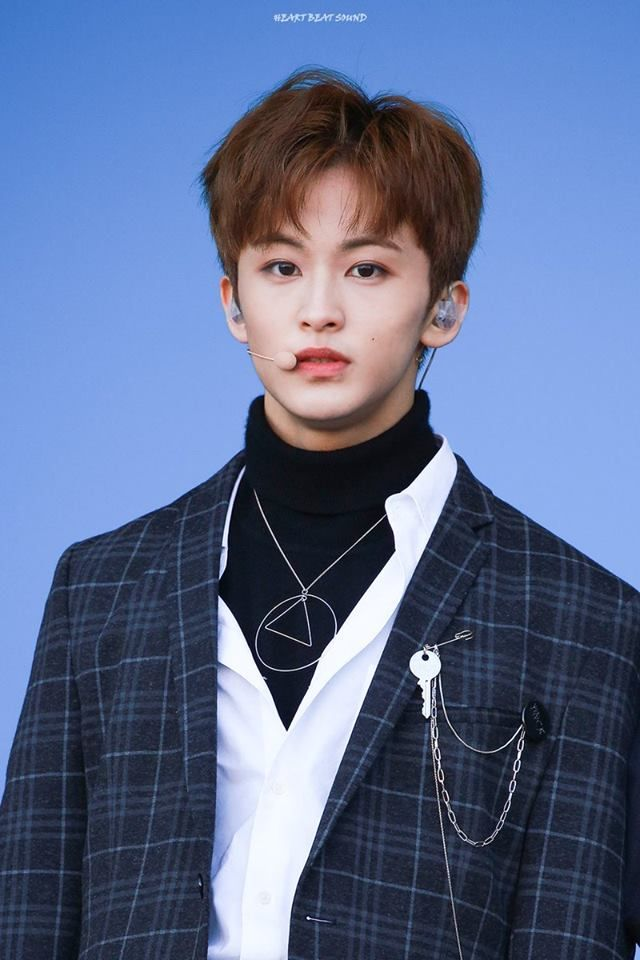
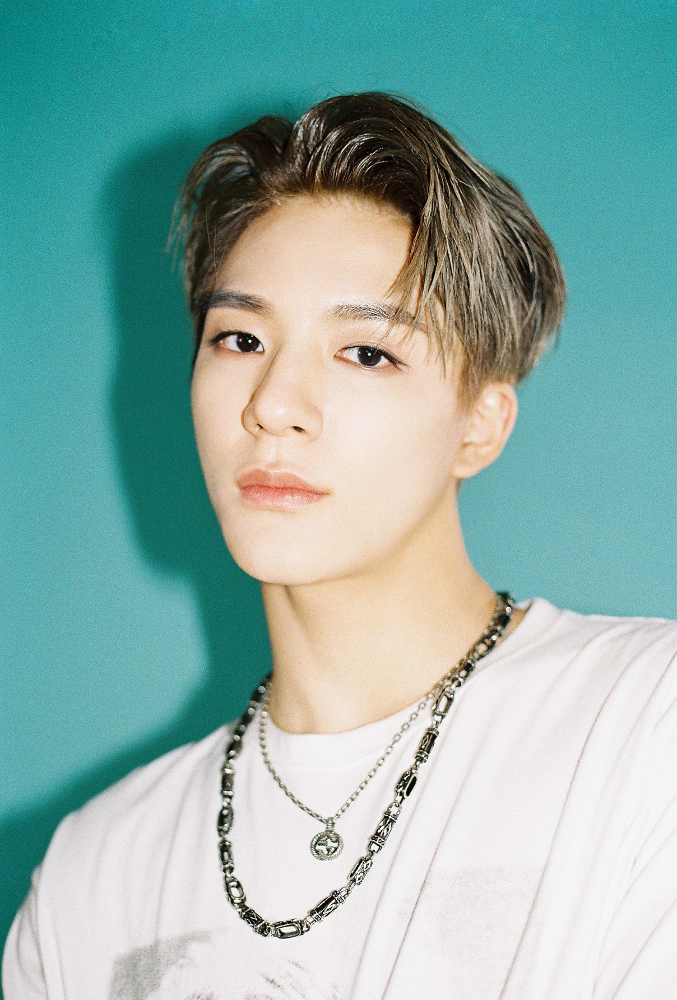
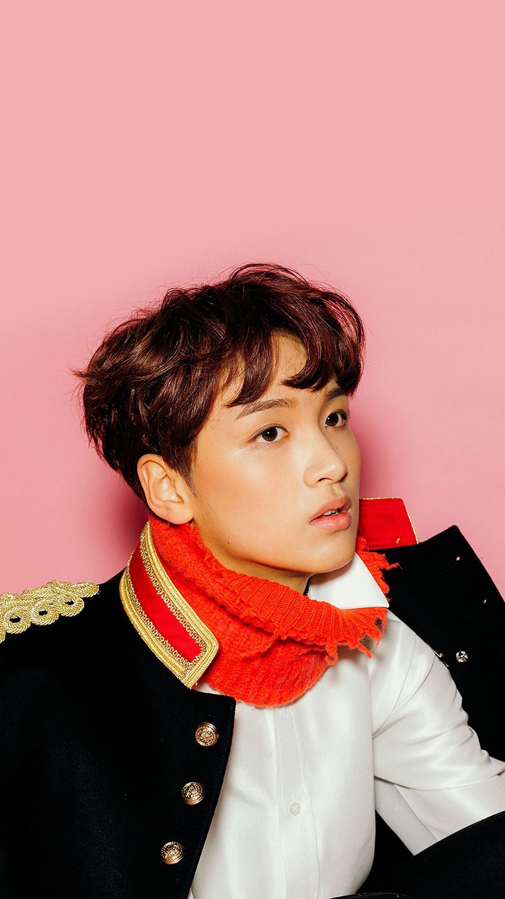
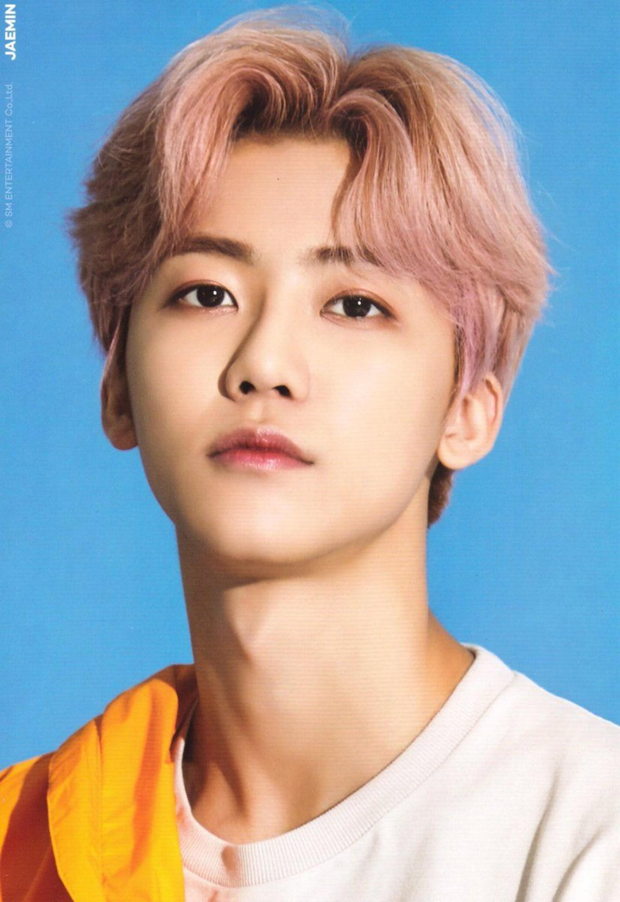
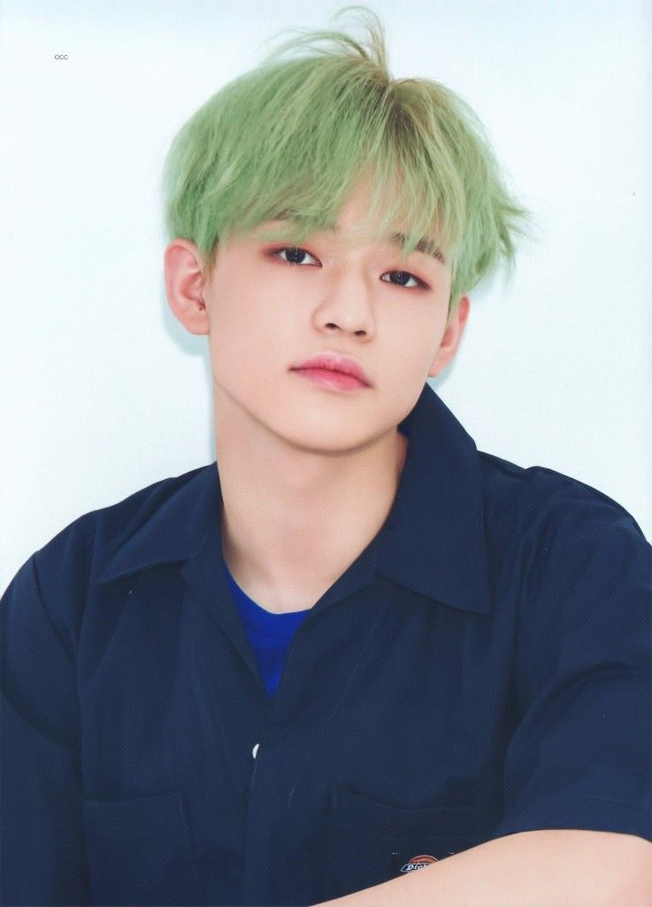
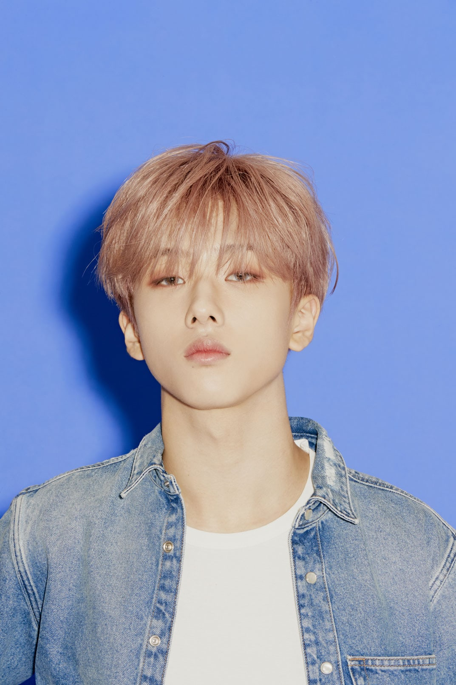

NCT DREAM (엔씨티 DREAM) is the 3rd sub-unit of the boy group NCT. The sub-unit consists of 7 members: Mark, Renjun, Jeno, Haechan, Chenle, Jaemin, and Jisung. The group debuted on August 25, 2016 under SM Entertainment.

Mark'S PROFILE
Stage Name: Mark (마크)
Birth Name: Mark Lee
Korean Name: Lee Min Hyung (이민형)
Position: Leader, Main Rapper, Main Dancer, Sub Vocalist, Face of the Group
Birthday: August 2, 1999
Zodiac Sign: Leo
Height: 176 cm (5’9″)
Weight: 61 kg (134 lbs)
Blood Type: A
Mark Facts:
– Mark was born in Toronto but moved to Vancouver, Canada at a very young age. (vLive)
– He was born in Jilin, the People’s Republic of China.
– Renjun’s favorite school subject is Korean. There is no subject that he hates.
– His new nickname is “Injoong”. (vLive)
– Because of where he lived, he grew up bilingual in both Korean and Mandarin. However, he also understands English very well.
– His favorite movies: Avengers and Avatar (he said pretty much just sci-fi)
– Renjun’s favorite movie is Awake (Celuv. Tv)
– He appreciates Lay from EXO a lot.
– Renjun says he’s aware of how dirty the room he shares with Jisung and Jeno is. He says all the lotions are all over the place, but they have their own spots.

Jeno'S PROFILE
Stage Name: Jeno (제노)
Birth Name: Lee Je No (이제노)
Position:Lead Dancer, Lead Rapper, Sub Vocalist, Visual
– Jeno can play the guitar (as seen in MY SMT with Nct Dream (161024) and in NCT LIFE with Nct Dream, (170304) Episode 5)
– Jeno said he hates math the most. (Dream vs Dream)
– He is allergic to fur, though his family owns 3 cats (mentioned in [NCT LIFE MINI] NCT NEWS EP.05)

Heachan'S PROFILE
Stage Name: Haechan (해찬)
Birth Name: Lee Dong Hyuck (이동혁)
Position: Main Vocalist
Birthday: June 6, 2000
Zodiac Sign: Gemini
Height: 174 cm (5’8.5″)
Weight: 58 kg (128 lbs)
Blood Type: AB
Heachan Facts:
– He was born in Seoul but moved to Jeju when he was 7 through to the age of 12 ([N’-60] Dream VS Dream)
– Specialty: Dance and playing football
– Nickname: Dongsookie
– His hobbies are playing piano, listening to music, and singing.
– Haechan dreams to become a singer-songwriter.
– He’s the mood maker of the group.
– He does the most cleaning in the dorm.
– Haechan is the only member who is most likely to answer his phone. (NCT Night Night)
– He was announced as an NCT U member for the STATION X special release, on December 2, 2019.
– He’s also part of NCT 127
– Haechan lives in the NCT 127 dorm. In the new dorm, Haechan and Johnny are roommates. (Lower floor)

Jaemin'S PROFILE
Stage Name: Jaemin (재민)
Birth Name: Na Jae Min (나재민)
Position: Lead Dancer, Sub Rapper, Sub Vocalist, Visual, Center
Birthday: August 13, 2000
Zodiac Sign: Leo
Height: 177 cm (5’10″)
Weight: 58 kg (128 lbs)
Blood Type: AB
Jaemin Facts:
– He was born in Seoul, South Korea.
– Jaemin doesn’t have any siblings and wants a sister (Celuv.tv)
– Nickname: Nana.
– Favorite Color: White.
– Favorite Artists: Lee Young Dae, EXO’s KAI, Tight Eyez.
– Haechan says that one could wash clothes on Jaemin’s abs. (vLive)
– Jaemin takes really short showers. (vLive)

Chenle'S PROFILE
Stage Name: Chenle (천러)
Birth Name: Zhong Chenle (钟辰乐 / 鍾辰樂)
Korean Name: Jong Jin Rak (종진락)
Position: Main Vocalist
Birthday: November 22, 2001
Zodiac Sign: Scorpio/Sagittarius cusp
Height: 176 cm (5’9″)
Weight: 58 kg (128 lbs)
Blood Type: O
Chenle Facts:
– He was born in Shanghai, the People’s Republic of China.
– Chenle debuted only after 2 months of training.
– His hobbies are cooking, football and everything related to music.
– He appreciates LAY (EXO) a lot.
– Chenle is afraid of spiders.
– He can play the piano.
– He speaks mandarin in his sleep.
– Chenle likes Chocolate Milk (pretty much anything chocolate)
– Renjun said when Chenle makes eggs, oil is all over the floor.
– Chenle is known as “Dolphin” because of his high-pitched laugh and screams.
– Chenle doesn’t live in the dormitory anymore, his mom bought a house in Seoul and stays with him. If his mom has a business to attend to in China, his aunts stay with him. (“One Night Sleepover”)

Jisung'S PROFILE
Stage Name: Jisung (지성)
Birth Name: Park Ji Sung (박지성)
Position: Main Dancer, Sub Vocalist, Sub Rapper, Maknae
Birthday: February 5, 2002
Zodiac Sign: Aquarius
Height: 180 cm (5’11″)
Weight: 61 kg (134 lbs)
Blood Type: O
Jisung Facts:
– He was born in Seoul, South Korea, but lived in Busan for 3-4 years.
– Specialty: Popping, Locking.
– Favorite Sport: Soccer.
– Favorite Artist: EXO’s KAI.
– Hobbies: Rapping, Dancing, Singing
– He sleeps in the living room of the dorm because he says since he has the top bunk, it takes too long to get up and down from it.
– Jisung can understand English well, but he’s not confident in his pronunciation. (vLive)
REDVELVET MEMBER'S
ABOUT US
K-Pop and K-Drama artist profile shows where this website reveals the real information of your idol such as the Real Name, Age, where it Lives